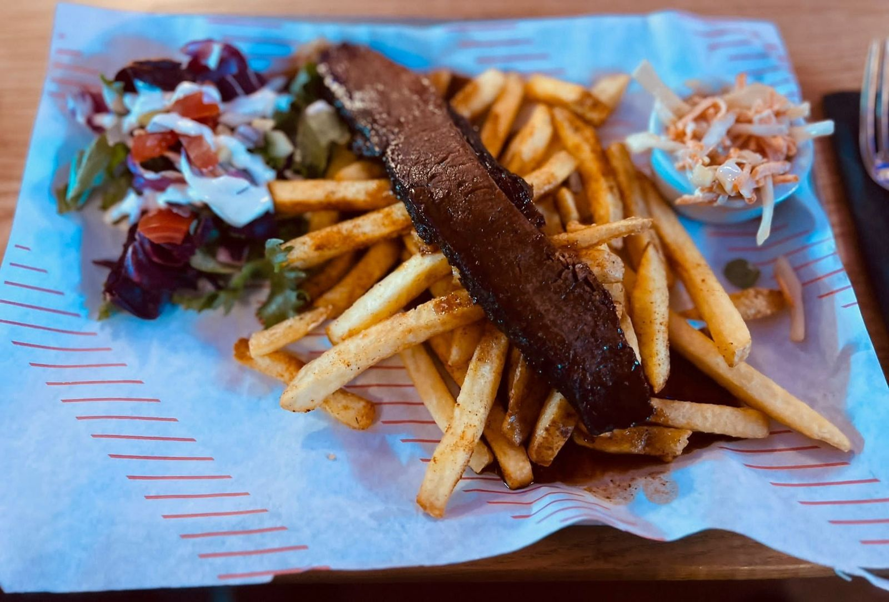
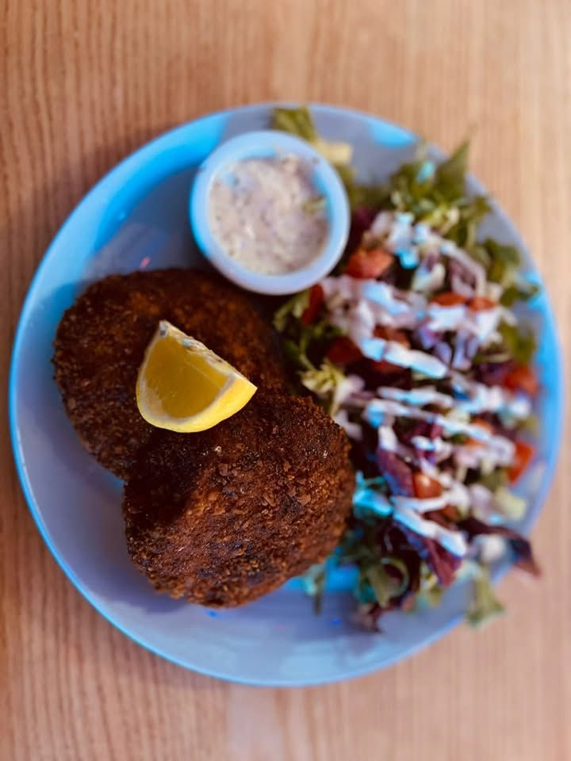
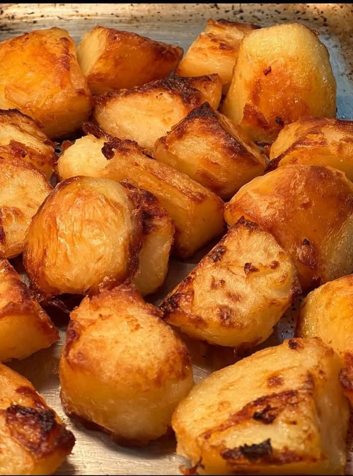
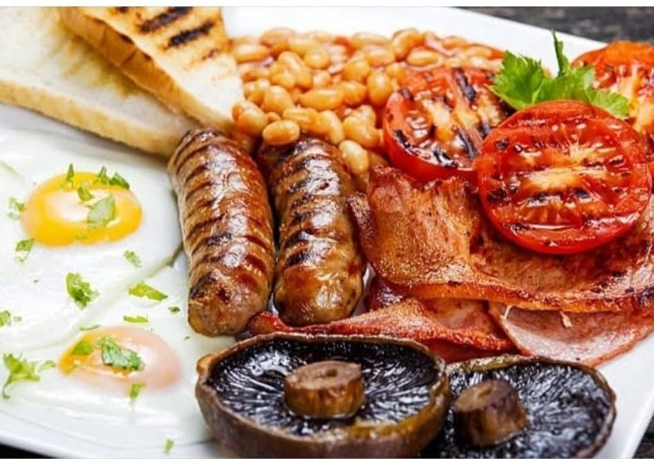
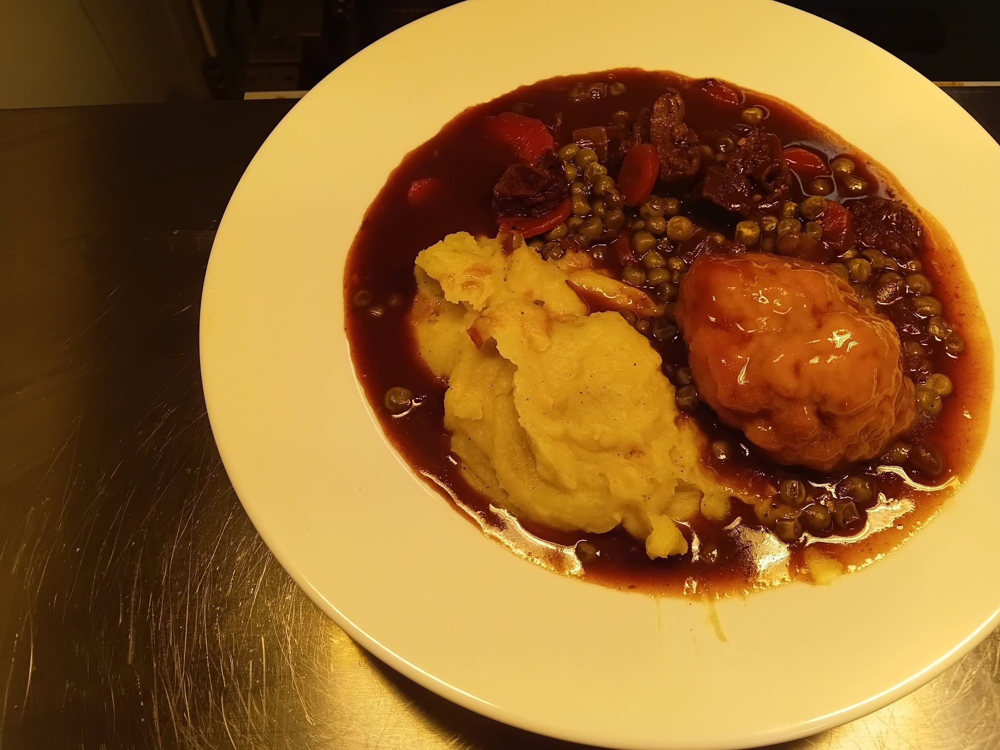
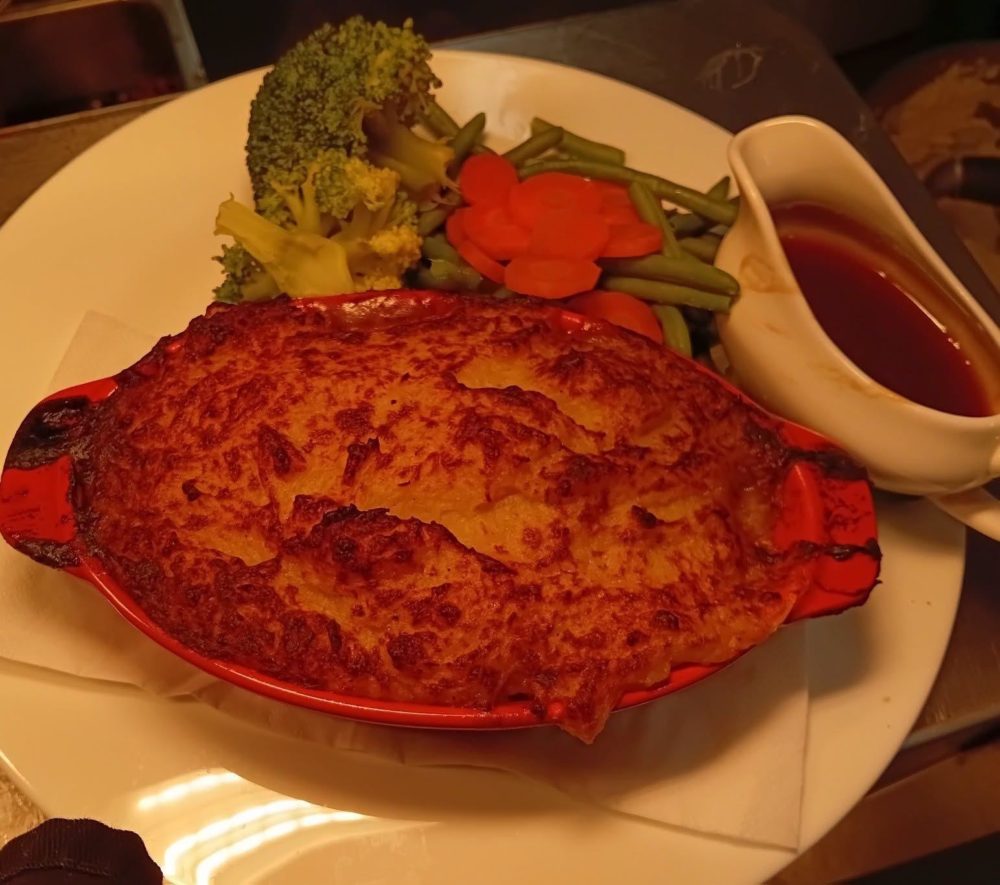
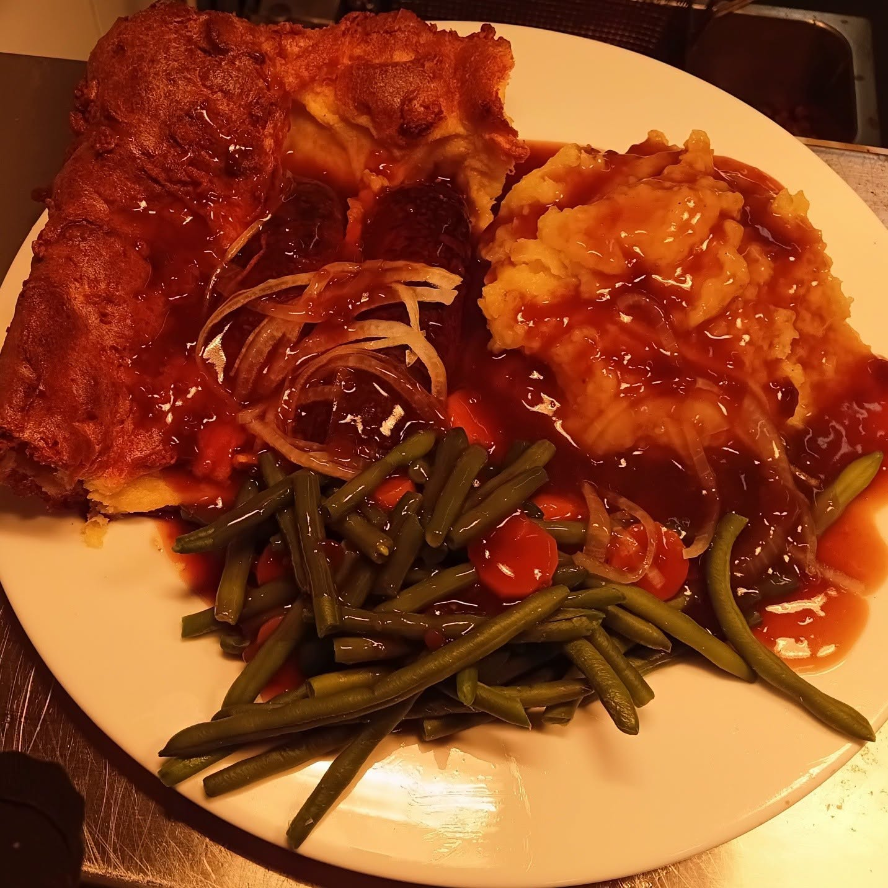
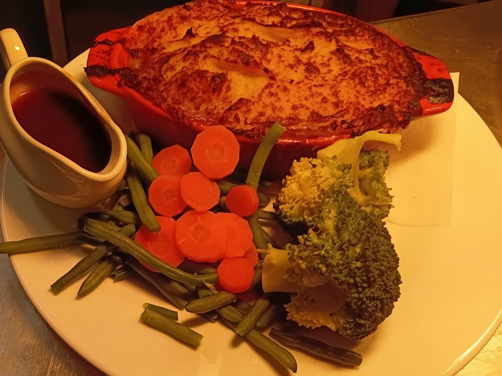
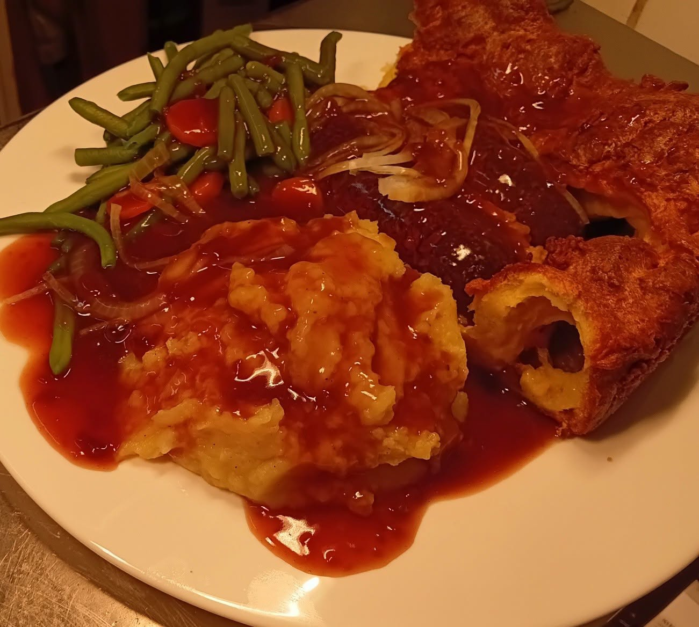

Smoky Pork Belly
£7.95Pork belly chunks with a maple and cider glaze

Smoked meats, pub favourites, Sunday roasts and festive dining.
Pork belly chunks with a maple and cider glaze
Served with sour cream. Piri piri (hot) or buffalo
Cheddar, sour cream, salsa and jalapeños
Cheddar, sour cream, salsa and jalapeños
Sliced beef brisket, pork ribs, piri piri wings, applewood-smoked belly bites, smoked sausage, pit beans, mac 'n' cheese, slaw and skin-on fries
Dressed salad, slaw, skin-on fries and peppercorn sauce
Dressed salad, slaw, skin-on fries and peppercorn sauce
Smoked beef brisket, cheddar, slaw, pickles and skin-on fries
Lashford's lightly smoked Cumberland sausage with mash, onion gravy and crispy shallots
Topped with cheddar and slaw, served with skin-on fries
Fried eggs, skin-on fries, peas and slaw
Finished on the grill with Cajun fries and slaw
Skin-on fries and slaw
BBQ sauce in a sesame-seeded bun, served with skin-on fries
With lemon-dressed salad
With peas and tartare sauce
With cookie dough ice cream
With vanilla ice cream
With strawberries and chocolate sauce
With vanilla ice cream
Pork belly chunks with a maple and cider glaze
Served with sour cream. Piri piri (hot) or buffalo
Cheddar, sour cream, salsa and jalapeños
Cheddar, sour cream, salsa and jalapeños
All served with roast potatoes, braised red cabbage, swede mash, seasonal greens, roasted roots, Yorkshire pudding and gravy.
With apple sauce and crackling
Smoked and lightly spiced
With fries, baked cherry tomatoes and Parmesan
With fries, baked cherry tomatoes and Parmesan
With skin-on fries and slaw
BBQ sauce in a sesame-seeded bun with skin-on fries
Smoked beef brisket, cheddar, slaw, pickles and skin-on fries
Finished on the grill with Cajun fries and slaw
Served with crusty ciabatta bread. (V)
Served on a bed of young salad leaves and topped with Stilton bon bons.
With slices of warm toasted ciabatta bread.
Tender roast turkey stuffed with our signature sage and onion stuffing. Roasted root vegetables, sprouts, roast potatoes, pigs in blankets and Yorkshire pudding, topped with turkey stock gravy.
Served on a bed of creamy mashed potato with roasted root vegetables, pigs in blankets and a Yorkshire pudding, topped with velvety minted gravy.
Vegetarian nut roast with succulent apricots, accompanied by seasonal roasted vegetables and all the trimmings including our vegetarian Malbec gravy. (V)
With fennel, radish and black olive salad.
Served with either brandy cream or custard.
With custard or vanilla ice cream.
With toffee drizzle and a scoop of vanilla ice cream.
Served with a scoop of vegan ice cream.
Served with custard or a scoop of vanilla ice cream.
Selection of hard and soft cheeses served with crackers, pickles, onion chutney and grapes. Supplement of £10 per person.
(V) Vegetarian. Please speak to the team about allergies or dietary requirements when booking.
Dietary requirements? Please speak to the team about allergies before ordering. Dishes, menus and availability may change.









